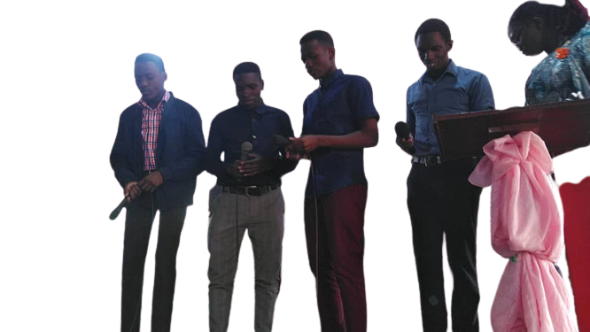

SINGING | READING | FOOTBALL | GARDENING | CONTACT ME
Music, art concerned with combining vocal or instrumental sounds for beauty of form or emotional expression, usually according to cultural standards of rhythm, melody, and, in most Western music, harmony. Both the simple folk song and the complex electronic composition belong to the same activity, music. Singing is an outstanding talent to me and I personally love singing acapella music generally the gospel type of it. I do Acapella music and my best experience was when we went for music competitions and me and my friends finished in the top three and we were given chance to record a song of our owm for free in a good looking studio.  Music is generally defined as the art of arranging sound to create some combination of form, harmony, melody, rhythm or otherwise expressive content. Exact definitions of music vary considerably around the world, though it is an aspect of all human societies, a cultural universal. More information about music